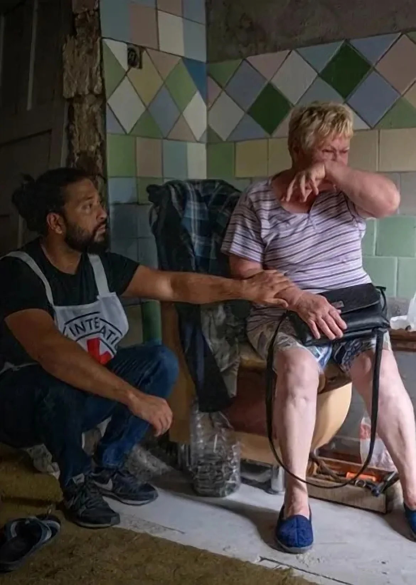

Quando a crise chega, a resposta precisa ser humana antes de ser grande.
A Cruz Vermelha atua para proteger vidas, preservar a dignidade e orientar pessoas em situações de vulnerabilidade. Em Itaguaí, essa missão nasce com foco em organização, transparência e preparo comunitário.